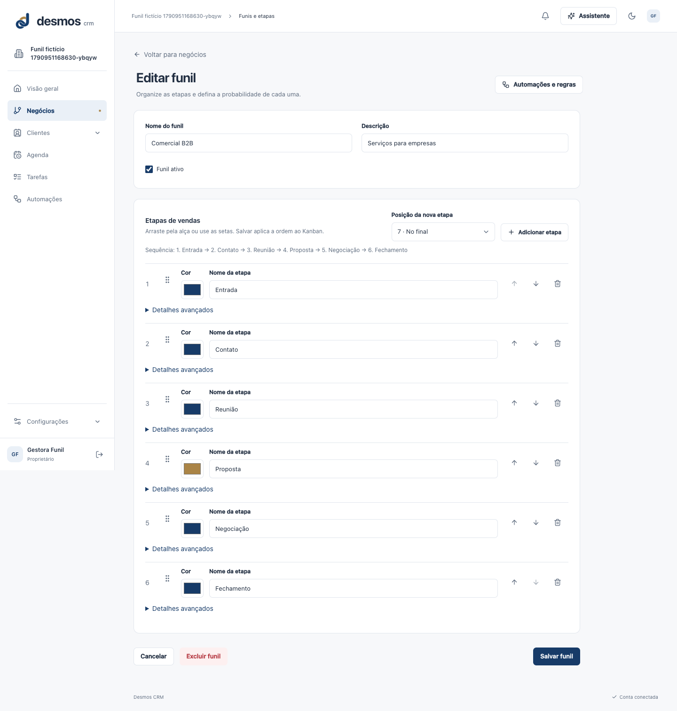
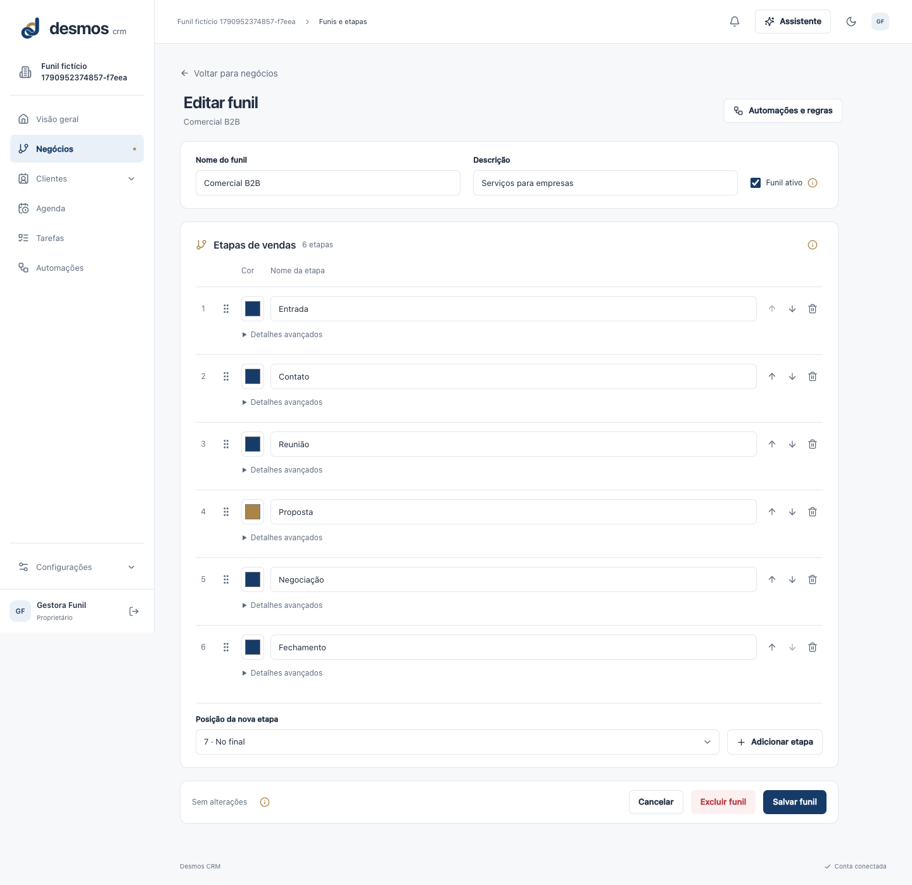
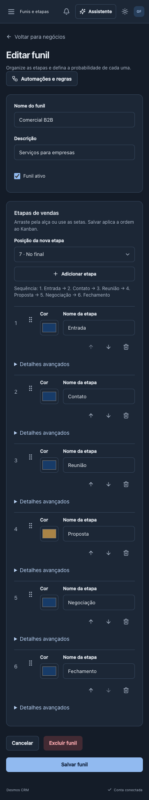
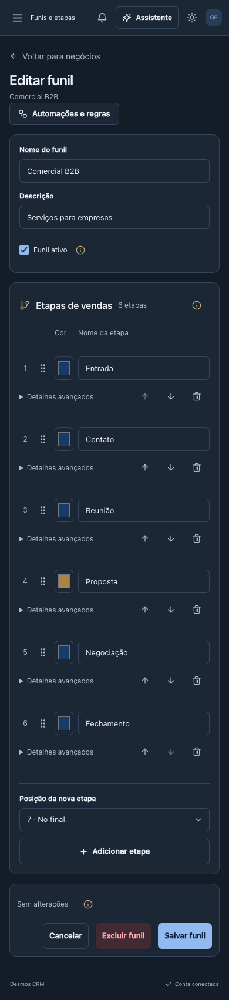

Editor de funil
Etapas mais compactas, orientações em i acionável, avançados recolhidos e dourado discreto. Estado e ações ficam juntos, sem cobrir o conteúdo.
Validação e limites · Decisões de design · 43 testes finais
Desktop claro
Antes
Depois
Mobile escuro
Antes
Depois
Desktop escuro
Mobile claro
Avançados e informação aberta